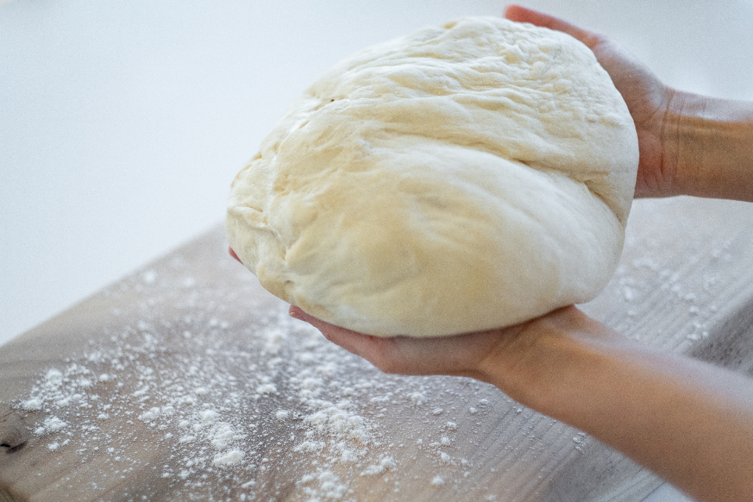

新潟市中央区 西堀前通 / 古町
早起きした朝に、
いちばん美味しいパンを。
新潟市中央区・西堀前通。古町の一角に、朝いちばんの焼きたてを並べる小さなパン屋があります。対面のショーケース越しに、店員が一つひとつ選んでお渡しします。


対面式ショーケース
声をかけて、選んでもらう。
SunBakeのパンは、棚から自分で取るのではなく、ショーケース越しに店員へ声をかけて取っていただくスタイルです。一つひとつ手渡しでお渡しするこの方法は、衛生的だとお客様からも評判をいただいています。数あるパンの中から迷ったときは、店員におすすめを尋ねてみてください。

素材へのこだわり
きび糖と、正直な一言と。
SunBakeのパンには上白糖を使わず、きび糖を使用しています。蜂蜜を使い、乳製品を使わずに仕上げたパンもご用意しています。一方で、店としてアレルギーに完全な対応をすることは難しいのが実情です。原材料が気になる方は、ご来店の際に店員へ直接お尋ねください。

店主の経験
都内で積んだ経験を、古町の一角で。
店主は都内の有名店で経験を積み、この西堀前通にSunBakeを構えました。バターをたっぷりと使った、小さめサイズで見た目にも高級感のあるパンや焼き菓子が並びます。古町にこうした店が増えていくことを、私たちも楽しみにしています。
お客様の声
以下は、実際にGoogleマップへ投稿されたクチコミより、原文のまま掲載しています。投稿者名は表示せず、評価と投稿時期のみをご紹介します。
-
★★★★☆
6 か月前
キャッシュレス対応 上白糖不使用（キビ糖使用） アレルギー対応は難しい。 ハード系パンよりも惣菜、菓子パンメイン。食パンは糖類、乳製品あり。 上白糖不使用はポイント高い。 店員さんが取ってくれるスタイルも衛生的で良い。 蜂蜜使用、乳製品なしの400円程度のパンを購入。 焼いてガーリックヴィーガンバターを塗布していただきました。 軽いけどもっちりして美味しくいただきました。そのままでも美味しいですが焼いた方がベストです。
-
★★★★★
1 か月前
【初訪問】 2026/7初訪問 センスの良いパンの種類が豊富 モチモチ食感のパンが美味しかったです。 キャッシュレス決済に対応されているので、便利です。
-
★★★★☆
8 か月前
古町で新しくパン屋を探していて見つけたところです。店内は狭いながらも可愛らしく、パンを綺麗に陳列していており、どれも美味しそうでした。店員さんも優しく応対してくれます。
-
★★★★☆
3 年前
ちょっと早起きして美味しいパンを食べる がコンセプトのパン・焼き菓子店です。 （古町100選より） 店主は都内の有名店ご出身とのこと。 お洒落な店舗にバターたっぷりの 可愛らしいパン達が並んでます。 こういったお店が古町に 増えてくれくると嬉しいです。 【注文】 バナナブレッド シナモンロール プレーンスコーン たくさん種類があったので、 オススメを伺ってから購入しました。 特にバナブレッドが美味しかったです。 パンのサイズも小さめで、 割と高級感があります。
-
★★★★★
8 か月前
古町に用事があり歩いていたらいい匂いがしたので通りかかったお店に入ってみました！ パンが並んであり店員さんに声をかけて取ってもらえるシステム！ いっぱいあり悩んだけど食事系のサンドイッチ、セロリ＆チーズ、スコーンを購入！ まだ食べてみたいものばかりなのでまたお邪魔したいです！